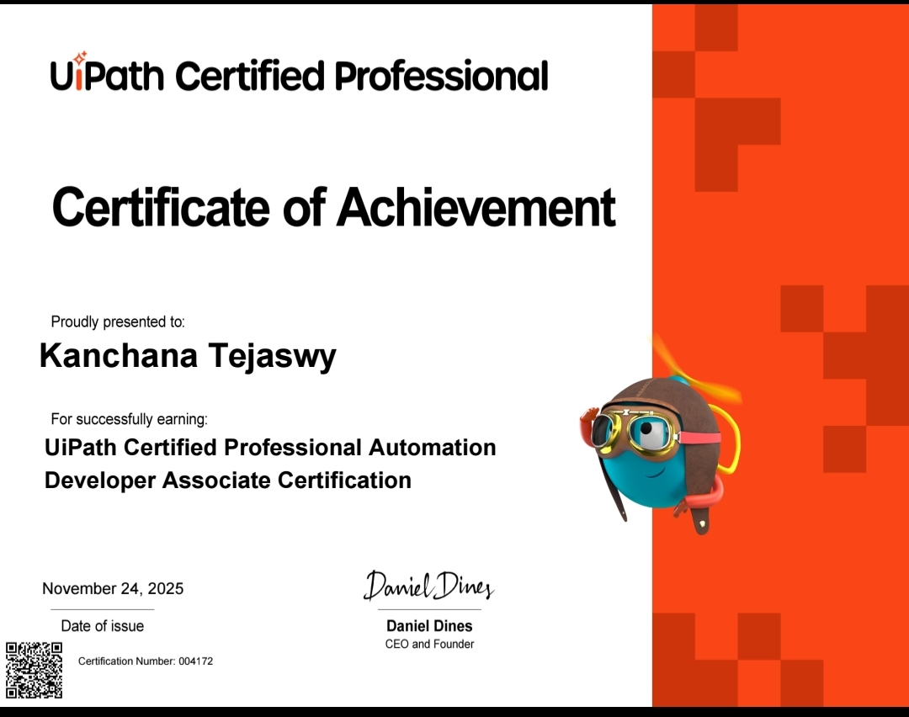

UiPath Associate Developer
Issued by UiPath | 2025
UiPath Automation Developer Associate Certification
I’m happy to share that I have successfully earned the UiPath Certified Professional – Automation Developer Associate Certification. This is my first global certification in Robotic Process Automation (RPA) and an important milestone in my automation journey.
A sincere thanks to my mentor Krishnanand S H for his guidance and support in helping me understand UiPath fundamentals and develop practical automation solutions.
Key Automation Projects
- Hello World Bot – Basic Notepad automation using UiPath
- ACME Bot – Automation workflow based on ACME platform scenarios
- Bank Loan Approval Bot – Automated loan decision workflow
- ID Card Generator Bot – Automated ID card generation from data
Skills Strengthened
- UiPath Orchestrator
- REFramework
- Exception Handling & Debugging
- Real-world RPA Automation
Special thanks to my seniors Tejaswi Marka, Devupalli Jayanth, Varun Manchikanti, and Shivathmika Bollapally for their continuous support and encouragement.
I look forward to building more impactful automation solutions and growing further in the field of Robotic Process Automation.
View Certification view Other 3 certificationsof UiPath
Python Development Workshop
Issued by IIT Bhombay | 2025
I successfully completed a Python Development Workshop that focused on building strong foundations in Python programming, data visualization, and problem solving through hands-on practice and real-world examples.
Key Topics Covered
- Python basics – data types, strings, arithmetic operations
- Control flow – conditional statements and loops
- Core data structures – lists, tuples, dictionaries, and sets
- Functions and file handling
- Modules and exception handling
- Data visualization and plotting
- NumPy arrays and matrix operations
- Introduction to image processing
This workshop strengthened my Python programming fundamentals and enhanced my problem-solving skills.
Faculty Coordinators and Mentors
- M.V. Vijaya Saradhi
- A. Ramesh
- Ch. Srivatsa
- P. Swaroopa
- D. Aswani
- Jaichand
- V. Chandra Sekhar
- Rethvik

Basic Python Programming
Issued by Geeks for Geeks | 2025
Completed hands-on training in basic Python
View Certificate